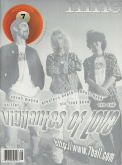

Vigilantes of LoveOn the cover
November 1996
7ball | Media coverage- Jan 1993 in Notebored "Vigilantes of Love"
- 1993 in Cornerstone "Interview: Vigilantes of Love"
- Jul 1993 in Syndicate "Concert Review: CBGB, New York City, NY", by Robert Mineo
- Fall 1993 in True Tunes News "Taking Love Into Their Own Hands", by John J. Thompson
- Aug 1994 in CCM "Accidental Tourists in Struggleville", by Bruce A. Brown
- Nov 1994 in Syndicate "Vigilante of Strugglleville"
- Jul 1996 in CCM "The Other Side of the Tracks"
- 7 Oct 1996 in Christianity Today "News: Too Holy For The World, Too Worldly For the Church", by Ted Olson
- Nov 1996 in 7ball "Vigilantes of Love", by Amy E. Dixon
- Aug 1997 in CCM "On The Beat: Too Sexy For Your Church?", by Marykay Selby
- Oct 1998 in CCM "Double Jeopardy: Music and Faith In Culture: Vigilante Justice", by Bruce A. Brown
- Win 1998 in True Tunes News "200-proof Rock & Roll", by J. Edward Keyes
- Jul 1999 in 7ball "Names You Probably Know (But Need To Check Out Their New Stuff)", by Chris Well
- Nov 2000 in 7ball "Take Two", by Matt Simon
- Apr 2001 in CCM "In Concert: First Presbyterian Church, Hollywood, CA", by Dave Urbanski
- Nov 2002 in HM "Liquid Futures", by Brian Quincy Newcomb
- Apr 2009 in Down The Line "Live Report: Eddies Attic, Decatur, GA 1-23-2009"
- Dec 2009 in Down The Line "...heart made for heaven, skin made for earth...", by Steve Ruff
- Feb 2012 in Down The Line "Bill Mallonee, Vigilantes of Love"
Albums & reviews:1990: Jugular
1991: Driving the Nails
1994: Welcome to Struggleville 1998: To the Roof of the Sky 1998: Live at the Forty Watt 1999: 'Cross the Big Pond 2000: Electromeo EP
2002: Resplendent
2011: Electromeo EP [reissue] Award Summary (Nominations / Wins)
Dove AwardsBooks about Vigilantes of Love
- "Vigilantes of Love" in The Encyclopedia of Contemporary Christian Music (Mark Allan Powell, 2002).
- "Vigilantes of Love" in The Billboard Guide to Contemporary Christian Music (Barry Alfonso, 2002).
|